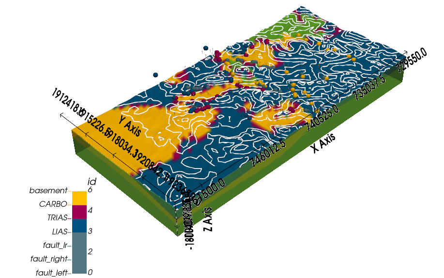

About¶
Open-source software for implicit 3D structural geological modeling in Python.¶
Overview¶
GemPy is a Python-based, community-driven, open-source geomodeling library. It is
capable of constructing complex 3D geological models including various features such as
fold structures, fault networks and unconformities, based on an underlying
powerful implicit approach. From the ground up, GemPy was designed to be easily embedded in probabilistic frameworks for conducting
uncertainty analysis regarding subsurface structures.
3D models created with GemPy may look like this:
Contents:
Features¶
Geological features¶
GemPy is capable of modeling complex 3D geological scenarios, including:
Multiple conformal layers (e.g. sequences of sedimentary layers)
Several sequences of layers, with conformal continuation or unconformities
Magmatic bodies of (almost) arbitrary shapes
Faults (offset calculated automatically from affected geological objects)
Full fault networks (faults affecting faults)
Folds (affecting single layers or entire layer stacks, including overturned and recumbent folds)
Combining these elements in GemPy allows for the generation of realistic 3D geological models, on a par with most commercial geomodeling software.
Interpolation approach¶
The generation of complex structural settings is based on the powerful
interpolation algorithm underlying GemPy, a unviersal cokriging method
devised by Lajaunie et al. (1997) and extended by Calcagno et al. (2008).
This method is used to interpolate a 3D scalar field, such that geologically
significant interfaces are isosurfces in this field.
The algorithm allows for a direct integration of two of the most relevant geological input data types:
Surface contact points: 3D coordinates of points marking the boundaries between different features (e.g. layer interfaces, fault planes, unconformities).
Orientation measurements: Orientation of the poles perpendicular to the dipping of surfaces at any point in 3D space.
GemPy also allows for the definition of topological elements such as
combining multiple stratigraphic sequences and
complex fault networks to be considered in the modeling process.
Integrated visualization¶
Models generated with GemPy can be visualized in several ways:
direct visualization of 2D model sections (or geological maps) using matplotlib, including hillshading and other options for intuitive representation of results;
3D visualization using Pyvista, including interactive plots
For a more detailed elaboration of the theory behind GemPy, we refer to the
open access scientific publication:
“GemPy 1.0: open-source stochastic geological modeling and inversion”
by de la Varga et al. (2019).
Publications using GemPy¶
Marquetto, L., Jüstel, A., Troian, G.C., Reginato, P.A.R & Simões, J.C. (2024). Developing a 3D hydrostratigraphical model of the emerged part of the Pelotas Basin along the northern coast of Rio Grande do Sul state, Brazil. Environmental Earth Sciences, 83, 329.
Brisson, S., Wellmann, F., Chudalla, N., von Harten, J., & von Hagke, C. (2023). Estimating uncertainties in 3-D models of complex fold-and-thrust belts: A case study of the Eastern Alps triangle zone. Applied Computing and Geosciences, 18, 100115.
Liang, Z., de la Varga, M., & Wellmann, F. (2023). Kernel method for gravity forward simulation in implicit probabilistic geologic modeling. Geophysics, 88(3), G43-G55.
Kong, S., Oh, J., Yoon, D., Ryu, D. W., & Kwon, H. S. (2023). Integrating Deep Learning and Deterministic Inversion for Enhancing Fault Detection in Electrical Resistivity Surveys. Applied Sciences, 13(10), 6250.
Thomas, A. T., Micallef, A., Duan, S., & Zou, Z. (2023). Characteristics and controls of an offshore freshened groundwater system in the Shengsi region, East China Sea. Frontiers in Earth Science, 11, 1198215.
Haehnel, P., Freund, H., Greskowiak, J., & Massmann, G. (2023). Development of a three-dimensional hydrogeological model for the island of Norderney (Germany) using GemPy. Geoscience Data Journal, 00, 1–17.
Jüstel, A., de la Varga, M., Chudalla, N., Wagner, J. D., Back, S., & Wellmann, F. (2023). From Maps to Models-Tutorials for structural geological modeling using GemPy and GemGIS. Journal of Open Source Education, 6(66), 185.
Thomas, A. T., von Harten, J., Jusri, T., Reiche, S., & Wellmann, F. (2022). An integrated modeling scheme for characterizing 3D hydrogeological heterogeneity of the New Jersey shelf. Marine Geophysical Research, 43, 11.
Sehsah, H., Eldosouky, A. M., & Pham, L. T. (2022). Incremental Emplacement of the Sierra Nevada Batholith Constrained by U-Pb Ages and Potential Field Data. The Journal of Geology, 130(5), 381-391.
von Harten, J., de la Varga, M., Hillier, M., & Wellmann, F. (2021). Informed Local Smoothing in 3D Implicit Geological Modeling. Minerals 2021, 11, 1281.
Schaaf, A., de la Varga, M., Wellmann, F., & Bond, C. E. (2021). Constraining stochastic 3-D structural geological models with topology information using approximate Bayesian computation in GemPy 2.1. Geosci. Model Dev., 14(6), 3899-3913. doi:10.5194/gmd-14-3899-2021.
Güdük, N., de la Varga, M., Kaukolinna, J., & Wellmann, F. (2021). Model-Based Probabilistic Inversion Using Magnetic Data: A Case Study on the Kevitsa Deposit. Geosciences, 11(4):150.
Wu, J., & Sun, B. (2021). Discontinuous mechanical analysis of manifold element strain of rock slope based on open source Gempy. In E3S Web of Conferences (Vol. 248, p. 03084). EDP Sciences.
Stamm, F. A., de la Varga, M., & Wellmann, F. (2019). Actors, actions, and uncertainties: optimizing decision-making based on 3-D structural geological models. Solid Earth, 10, 2015–2043.
Wellmann, F., Schaaf, A., de la Varga, M., & von Hagke, C. (2019). From Google Earth to 3D Geology Problem 2: Seeing Below the Surface of the Digital Earth. In Developments in Structural Geology and Tectonics (Vol. 5, pp. 189-204). Elsevier.
References¶
de la Varga, M., Schaaf, A., and Wellmann, F.: GemPy 1.0: open-source stochastic geological modeling and inversion, Geosci. Model Dev., 12, 1–32, https://doi.org/10.5194/gmd-12-1-2019, 2019.
Calcagno, P., Chilès, J. P., Courrioux, G., & Guillen, A. (2008). Geological modelling from field data and geological knowledge: Part I. Modelling method coupling 3D potential-field interpolation and geological rules. Physics of the Earth and Planetary Interiors, 171(1-4), 147-157.
Lajaunie, C., Courrioux, G., & Manuel, L. (1997). `Foliation fields and 3D cartography in geology: principles of a method based on potential interpolation. Mathematical Geology, 29(4), 571-584.
Indices and tables¶


{kind=link}